2025
Mars
-
13 —
Amour, famille et fantômes
 L’Amour ouf, ♡ Melle Bottine, Ghosts (UK)
L’Amour ouf, ♡ Melle Bottine, Ghosts (UK) -
01 —
Grimm, CB Strike, Panda

 ♡ Grimm (intégrale), CB Strike (saison 6), Panda (saison 2)
♡ Grimm (intégrale), CB Strike (saison 6), Panda (saison 2)
Février
-
08 —
💖 Un peu de magie et d’amour en lecture


 ♡ Le Château de Hurle (Diana Wynne Jones), ♡ Le Château des nuages (Diana Wynne Jones), ♡ La fille dans l’écran (Lou Lubie et Manon Desveaux)
♡ Le Château de Hurle (Diana Wynne Jones), ♡ Le Château des nuages (Diana Wynne Jones), ♡ La fille dans l’écran (Lou Lubie et Manon Desveaux) -
04 —
Noël, altruisme, magie, animation, horreur et comédie


 Dear Santa, Un merveilleux Noël en famille, Fêlés, Wicked, Le Seigneur des Anneaux - La guerre des Rohirrim, Flow, ♡ Nosferatu, Le jardinier
Dear Santa, Un merveilleux Noël en famille, Fêlés, Wicked, Le Seigneur des Anneaux - La guerre des Rohirrim, Flow, ♡ Nosferatu, Le jardinier
2024
Décembre
-
22 —
Noël et haute voltige
 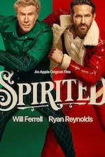
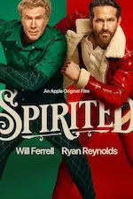


 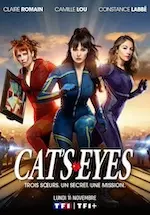♡ Red One, Spirited - L’Esprit de Noël, Un Noël givré, Noël sous les aurores boréales, ♡ La sÅ“ur des neiges, Our little secret, En colo avec ma mère, Cat’s Eyes
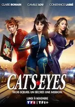♡ Red One, Spirited - L’Esprit de Noël, Un Noël givré, Noël sous les aurores boréales, ♡ La sÅ“ur des neiges, Our little secret, En colo avec ma mère, Cat’s Eyes - 15 — Quelques conseils d’un lecteur et d’un auteur pour bien écrire
-
01 —
Dernières lectures
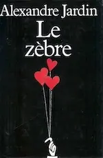Le Zèbre (Alexandre Jardin), La vie secrète des animaux (Peter Wohlleben), Guide pratique des habitats alternatifs en France (Toits alternatifs - collectif)
Novembre
-
30 —
Comédies romantiques, magie et autres films


 This time next year, Le bal masqué de Noël, Le nombre magique de Noël, The Merry Gentlemen, The portable door, Ellian et le sortilège, Sharper, Veuillez nous excuser pour la gêne occasionnée
This time next year, Le bal masqué de Noël, Le nombre magique de Noël, The Merry Gentlemen, The portable door, Ellian et le sortilège, Sharper, Veuillez nous excuser pour la gêne occasionnée -
10 —
Séries et animés

 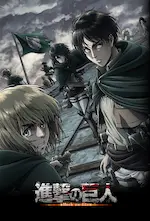
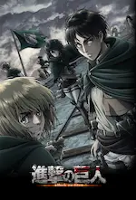 ♡ From, Resident alien, Attack on Titan, ♡ Yuru Camp
♡ From, Resident alien, Attack on Titan, ♡ Yuru Camp -
10 —
Comédies
 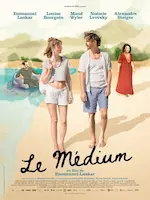
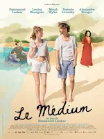

 Loups-garous, Le médium, Paris à tout prix, ♡ Pourquoi tu souris ?, Wolfs
Loups-garous, Le médium, Paris à tout prix, ♡ Pourquoi tu souris ?, Wolfs -
09 —
Poneys de Noël, romance fantastique et vengeance


 Falling inn love, Lettres magiques au Père Noël, Un ami pour Noël, ♡ Stardust - Le mystère de l'Étoile, Le Comte de Monte Cristo, Speak no Evil, Maurice le chat fabuleux, Joker folie à deux
Falling inn love, Lettres magiques au Père Noël, Un ami pour Noël, ♡ Stardust - Le mystère de l'Étoile, Le Comte de Monte Cristo, Speak no Evil, Maurice le chat fabuleux, Joker folie à deux
Octobre
-
29 —
 Les billes du temps, nouvelle
Les billes du temps, nouvelle
-
17 —
Creacover 2024, seconde partie
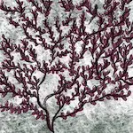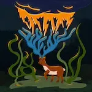
 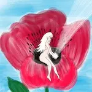
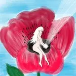 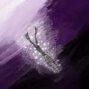
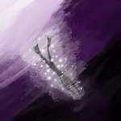
-
06 —
Poneys de Noël en veux-tu en voilà , douceur fantastique, comédie délirante et action hard core


 Romance écossaise, Un mariage qui fait rêver, L’amour ne s’apprend pas, Le guide du célibataire, We have a ghost, Les Bodin’s enquêtent en Corse, The Crow, The killer
Romance écossaise, Un mariage qui fait rêver, L’amour ne s’apprend pas, Le guide du célibataire, We have a ghost, Les Bodin’s enquêtent en Corse, The Crow, The killer
Septembre
-
29 —
Comédie, action, tranche de vie, enquêtes et fantasy


 Young Sheldon, ♡ Lupin, ♡ Le remplaçant, ♡ HPI, Brocéliande, Les anneaux de pouvoir
Young Sheldon, ♡ Lupin, ♡ Le remplaçant, ♡ HPI, Brocéliande, Les anneaux de pouvoir - 19 — Nouvelle balade dans la vallée de Chaudefour
Août
-
31 —
Poneys de Noël à gogo, gloubi-boulga émotionnel et comédie inspirée

 ♡ La Princesse et le bodyguard, La probabilité statistique de l’amour au premier regard, À Noël mon Prince viendra, Love again, Amoureuse de mon meilleur ami, Vice versa 2, ♡ Harold et le crayon magique
♡ La Princesse et le bodyguard, La probabilité statistique de l’amour au premier regard, À Noël mon Prince viendra, Love again, Amoureuse de mon meilleur ami, Vice versa 2, ♡ Harold et le crayon magique -
25 —
Creacover 2024, première partie
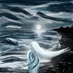


 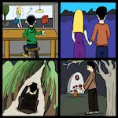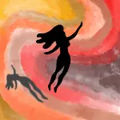
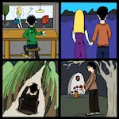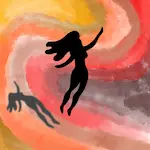 -
18 —
Pseudo comédies, presque romance, semblant d’horreur et rencontres


 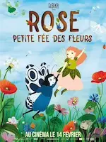Ducobu passe au vert, Jeff Panacloc - À la poursuite de Jean-Marc, To the Moon, Le mangeur d’âmes, Et plus si affinités, Rose - Petite fée des fleurs
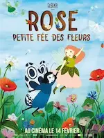Ducobu passe au vert, Jeff Panacloc - À la poursuite de Jean-Marc, To the Moon, Le mangeur d’âmes, Et plus si affinités, Rose - Petite fée des fleurs - 13 — Vacances en Ardèche en août 2024
-
02 —
Romance, drames, comédies et bestioles
 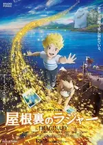
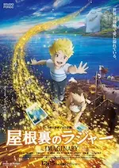
 ♡ Drawing Closer, L’imaginaire, Bis Repetita, Gremlins
♡ Drawing Closer, L’imaginaire, Bis Repetita, Gremlins
Juillet
-
31 —
 💖 La dernière allumette de Marie Vareille
💖 La dernière allumette de Marie Vareille
-
25 —
 Drama japonais From 5 to 9
Drama japonais From 5 to 9
- 13 (édité) — Balade un dimanche
-
11 —
Actions & comédie, quelques frissons, poney de Noël et émotions fortes


 Chien et chat, The fall guy, Sleep, Comment rencontrer l’âme sœur en 10 leçons, Love coach malgré moi, Arthur the King
Chien et chat, The fall guy, Sleep, Comment rencontrer l’âme sœur en 10 leçons, Love coach malgré moi, Arthur the King - 11 (édité) — 💖 Les Cosmiques de Diatomée
-
05 —
Tournage qui vire au fiasco et intellos asociaux

 Fiasco, The Big Bang Theory
Fiasco, The Big Bang Theory -
04 —
Flics fêlés, aides soignants impliqués, prof dépassé et requins mutants


 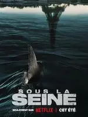Les infaillibles, Maison de retraite 2, Pas de vagues, Sous la Seine
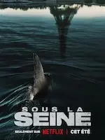Les infaillibles, Maison de retraite 2, Pas de vagues, Sous la Seine -
04 —
Amis imaginaires, guide à plumes, monstres et rêve plus doux que la réalité


 Blue et compagnie, Le garçon et le héron, Monster High 2, ♡ Le Royaume des Abysses
Blue et compagnie, Le garçon et le héron, Monster High 2, ♡ Le Royaume des Abysses